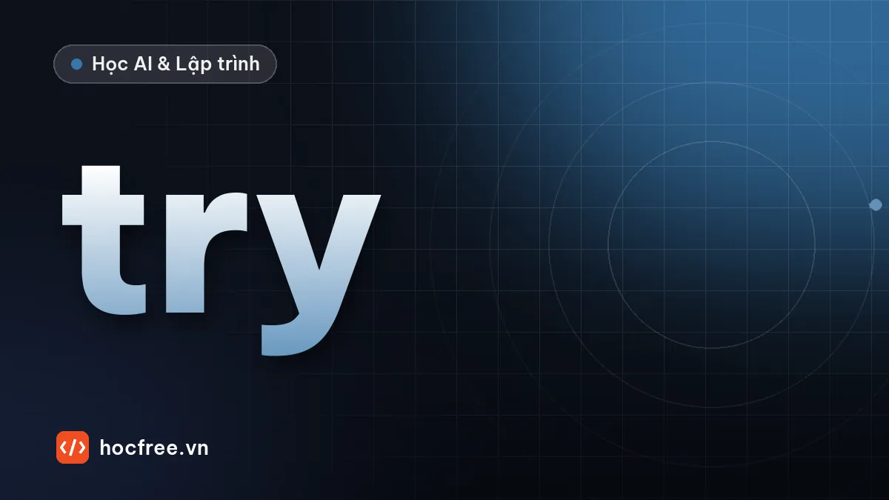

Xử lý ngoại lệ trong Python: try, except, else, finally, raise
Đọc traceback, bắt đúng loại ngoại lệ, dùng else và finally, tự định nghĩa exception và các lỗi người mới hay mắc khi dùng except.

Học xong bài này, bạn sẽ
- Đọc traceback và phân biệt các loại ngoại lệ hay gặp
- Dùng try/except/else/finally đúng phạm vi
- Tự định nghĩa và raise ngoại lệ có ý nghĩa
Nên học trước: Lưu dữ liệu bằng JSON và CSV
Nội dung bài viết
Người dùng gõ chữ vào ô số, file cấu hình bị xóa, mạng rớt giữa chừng: chương trình thật luôn gặp tình huống bất thường. Python báo các tình huống đó bằng ngoại lệ (exception). Bài này dạy cách đọc, bắt và tự tạo ngoại lệ đúng cách, để chương trình không chết vô cớ mà cũng không "nuốt" lỗi khiến bạn mất dấu.
1. Ngoại lệ là gì
Khi một lệnh không thể thực hiện, Python ném (raise) một đối tượng ngoại lệ. Nếu không ai bắt, chương trình dừng và in traceback. Các loại hay gặp:
| Ngoại lệ | Ví dụ gây ra |
|---|---|
ValueError | int("abc"): đúng kiểu nhưng giá trị không hợp lệ |
TypeError | "a" + 1: sai kiểu |
KeyError | {"a": 1}["b"]: dict không có khóa |
IndexError | [1, 2][5]: chỉ số vượt phạm vi |
ZeroDivisionError | 1 / 0 |
FileNotFoundError | open("khong_co.txt") |
AttributeError | None.upper(): đối tượng không có thuộc tính đó |
2. try / except
def chia(a, b):
try:
return a / b
except ZeroDivisionError:
print("Không chia được cho 0")
return None
print(chia(10, 4))
print(chia(10, 0))2.5
Không chia được cho 0
NonePython chạy khối try; nếu một lệnh ném ngoại lệ khớp loại ghi sau except, phần còn lại của try bị bỏ qua và khối except chạy. Ngoại lệ khác loại vẫn bay ra ngoài như bình thường.
def doc_tuoi(chuoi):
try:
tuoi = int(chuoi)
except ValueError as loi: # "as loi" để lấy đối tượng ngoại lệ
print(f"Không đọc được {chuoi!r}: {loi}")
return None
if not 0 < tuoi < 150:
print("Tuổi không hợp lý:", tuoi)
return None
return tuoi
for s in ["25", "hai mươi", "-3"]:
print("→", doc_tuoi(s))→ 25
Không đọc được 'hai mươi': invalid literal for int() with base 10: 'hai mươi'
→ None
Tuổi không hợp lý: -3
→ NoneBắt nhiều loại cùng cách xử lý: except (ValueError, TypeError):. Nhiều loại xử lý khác nhau: viết nhiều khối except liên tiếp, Python thử từ trên xuống.
3. else và finally
from pathlib import Path
Path("so.txt").write_text("12\n7\nx\n", encoding="utf-8")
def tong_file(p):
try:
f = open(p, encoding="utf-8")
except FileNotFoundError:
print("Không thấy file", p)
return 0
else: # chạy khi try KHÔNG có ngoại lệ
try:
tong = 0
for dong in f:
try:
tong += int(dong)
except ValueError:
print("Bỏ qua dòng:", dong.strip())
return tong
finally: # LUÔN chạy, kể cả khi đã return
f.close()
print("Đã đóng file")
print(tong_file("so.txt"))
print(tong_file("mat.txt"))Bỏ qua dòng: x
Đã đóng file
19
Không thấy file mat.txt
0else: phần code chỉ chạy khitrythành công. Đặt nó ởelsethay vì trongtryđể không vô tình bắt nhầm lỗi của phần đó.finally: dọn dẹp (đóng file, ngắt kết nối) dù thành công hay lỗi. Thực tế, với file bạn dùngwithlà đủ, vìwithchính làtry/finallyđược đóng gói sẵn.
4. raise: tự ném ngoại lệ
Khi hàm nhận dữ liệu không hợp lệ, đừng âm thầm trả về giá trị "lạ" như -1 hay None. Hãy ném ngoại lệ để nơi gọi buộc phải xử lý:
def tinh_lai(so_tien: float, lai_suat_nam: float, so_thang: int) -> float:
if so_tien <= 0:
raise ValueError(f"so_tien phải dương, nhận {so_tien}")
if not 0 <= lai_suat_nam < 1:
raise ValueError("lai_suat_nam là tỉ lệ 0–1, ví dụ 0.055 cho 5,5%/năm")
return so_tien * lai_suat_nam * so_thang / 12
print(tinh_lai(100_000_000, 0.055, 6))
try:
tinh_lai(100_000_000, 5.5, 6)
except ValueError as loi:
print("Lỗi:", loi)2750000.0
Lỗi: lai_suat_nam là tỉ lệ 0–1, ví dụ 0.055 cho 5,5%/năm5. Ngoại lệ tự định nghĩa
Với lỗi nghiệp vụ (số dư không đủ, sách đã được mượn), tạo lớp ngoại lệ riêng kế thừa Exception. Nơi gọi bắt đúng loại đó mà không lẫn với lỗi lập trình:
class LoiNganHang(Exception):
"""Lỗi gốc của module ngân hàng."""
class SoDuKhongDu(LoiNganHang):
def __init__(self, so_du: int, can_rut: int):
super().__init__(f"Số dư {so_du:,}đ không đủ để rút {can_rut:,}đ")
self.thieu = can_rut - so_du
def rut_tien(so_du: int, so_tien: int) -> int:
if so_tien > so_du:
raise SoDuKhongDu(so_du, so_tien)
return so_du - so_tien
try:
rut_tien(500_000, 800_000)
except SoDuKhongDu as loi:
print(loi, f"(thiếu {loi.thieu:,}đ)")Số dư 500,000đ không đủ để rút 800,000đ (thiếu 300,000đ)Bạn sẽ hiểu rõ class, kế thừa và super() ở chặng 4; tạm thời có thể dùng mẫu này như công thức. Có lớp gốc LoiNganHang thì nơi gọi có thể bắt mọi lỗi nghiệp vụ của module bằng một except LoiNganHang.
6. Những điều không nên làm
# (minh họa) ĐỪNG viết như thế này
try:
xu_ly_don_hang()
except: # bắt mọi thứ, kể cả Ctrl+C và lỗi gõ sai tên biến
pass # rồi im lặng: lỗi biến mất, không ai biết- Không dùng
except:trơn hayexcept Exception: pass. Lỗi đánh máyNameErrorcũng bị nuốt, và bạn sẽ mất hàng giờ tìm vì sao chương trình "không làm gì". - Bắt loại cụ thể nhất có thể và chỉ bọc đúng dòng có thể lỗi trong
try, không bọc cả trăm dòng. - Chỉ bắt khi biết xử lý (hỏi lại, bỏ qua dòng lỗi, dùng giá trị mặc định). Không biết xử lý thì để ngoại lệ bay lên nơi biết. Ở tầng ngoài cùng của ứng dụng, bắt rộng hơn là chấp nhận được, nhưng phải ghi log đầy đủ (bài sau).
- Bắt rồi ném tiếp loại khác:
raise LoiCauHinh("...") from loigiữ lại nguyên nhân gốc trong traceback.
open() rồi bắt FileNotFoundError, thay vì LBYL ("nhìn trước khi nhảy"): kiểm tra exists() rồi mới mở. Lý do: giữa lúc kiểm tra và lúc mở, file vẫn có thể bị xóa.Tóm tắt
- Đọc dòng cuối traceback để biết loại ngoại lệ.
try/except LoaiCuThe as loi;elsekhi thành công;finallyluôn chạy.raise ValueError("thông điệp rõ ràng")khi dữ liệu vào không hợp lệ.- Lỗi nghiệp vụ: lớp riêng kế thừa
Exception. - Không
except: pass; bọc ít code nhất có thể.
Bài tập
Bài 1. Nhập số nguyên an toàn
Viết nhap_so_nguyen(loi_nhac, nho_nhat, lon_nhat) hỏi lại đến khi người dùng nhập số nguyên trong khoảng cho phép.
Xem đáp án
def nhap_so_nguyen(loi_nhac: str, nho_nhat: int, lon_nhat: int) -> int:
while True:
chuoi = input(loi_nhac)
try:
so = int(chuoi)
except ValueError:
print(f" '{chuoi}' không phải số nguyên.")
continue
if nho_nhat <= so <= lon_nhat:
return so
print(f" Hãy nhập từ {nho_nhat} đến {lon_nhat}.")
thang = nhap_so_nguyen("Tháng (1-12): ", 1, 12)
print("Bạn chọn tháng", thang)Tháng (1-12): mười
'mười' không phải số nguyên.
Tháng (1-12): 13
Hãy nhập từ 1 đến 12.
Tháng (1-12): 10
Bạn chọn tháng 10Bài 2. Rút tiền nhiều lần
Dùng rut_tien và SoDuKhongDu ở mục 5. Với số dư 1.000.000đ, lần lượt rút 300.000, 900.000, 200.000; lần nào không đủ thì báo và bỏ qua, cuối cùng in số dư.
Xem đáp án
class SoDuKhongDu(Exception):
pass
def rut_tien(so_du: int, so_tien: int) -> int:
if so_tien > so_du:
raise SoDuKhongDu(f"Không đủ: còn {so_du:,}đ, cần {so_tien:,}đ")
return so_du - so_tien
so_du = 1_000_000
for can_rut in [300_000, 900_000, 200_000]:
try:
so_du = rut_tien(so_du, can_rut)
except SoDuKhongDu as loi:
print("Bỏ qua:", loi)
else:
print(f"Rút {can_rut:,}đ, còn {so_du:,}đ")
print(f"Số dư cuối: {so_du:,}đ")Rút 300,000đ, còn 700,000đ
Bỏ qua: Không đủ: còn 700,000đ, cần 900,000đ
Rút 200,000đ, còn 500,000đ
Số dư cuối: 500,000đKhi rút lỗi, phép gán so_du = ... không xảy ra nên số dư giữ nguyên: ngoại lệ ngắt lệnh ngay trước khi gán.
Nguồn tham khảo: Python Tutorial: Errors and Exceptions; Built-in Exceptions; Glossary: EAFP.
Bài tập thực hành
- Viết hàm nhap_so_nguyen(loi_nhac, min, max) hỏi lại đến khi người dùng nhập đúng.
- Viết hàm rut_tien(so_du, so_tien) raise SoDuKhongDu khi không đủ tiền; bắt lỗi ở nơi gọi.
Làm xong bài tập mới chuyển sang bài tiếp theo: tự viết code là cách duy nhất để nhớ lâu.